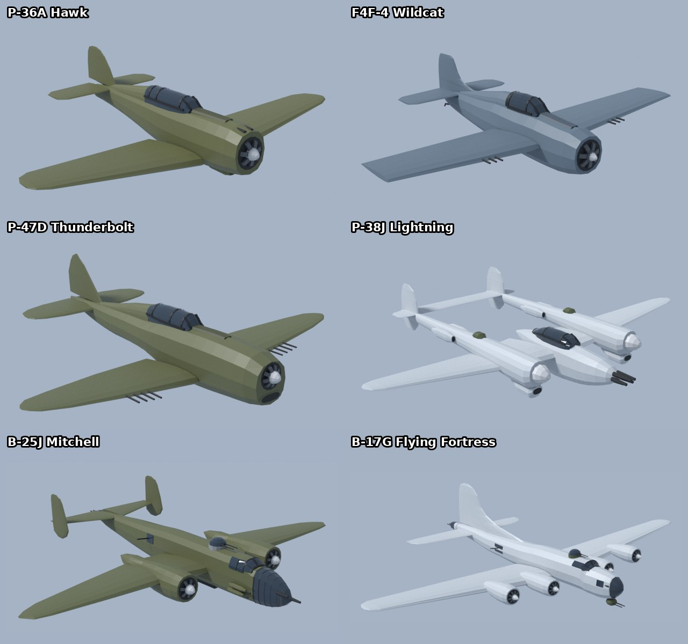
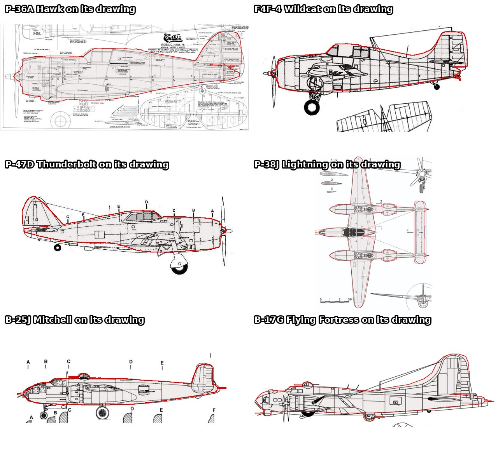
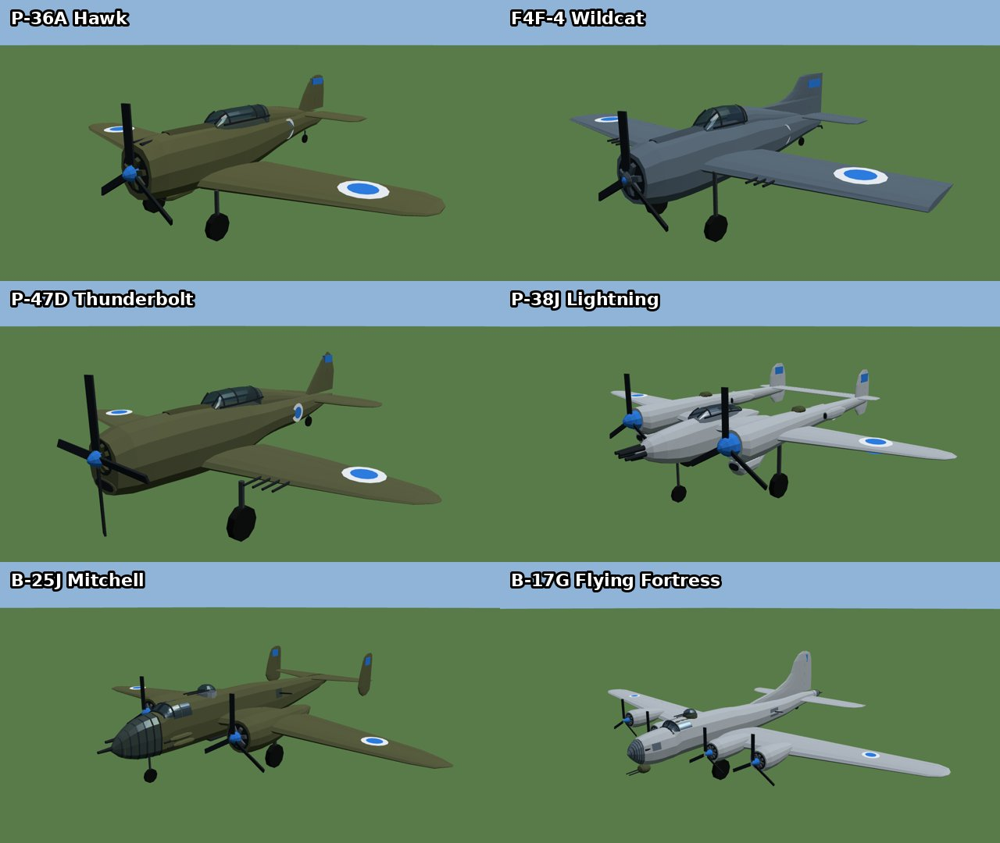
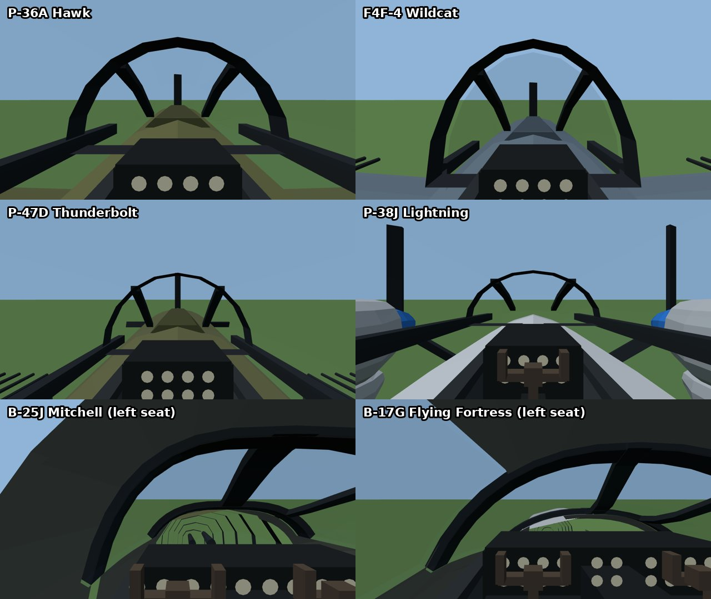
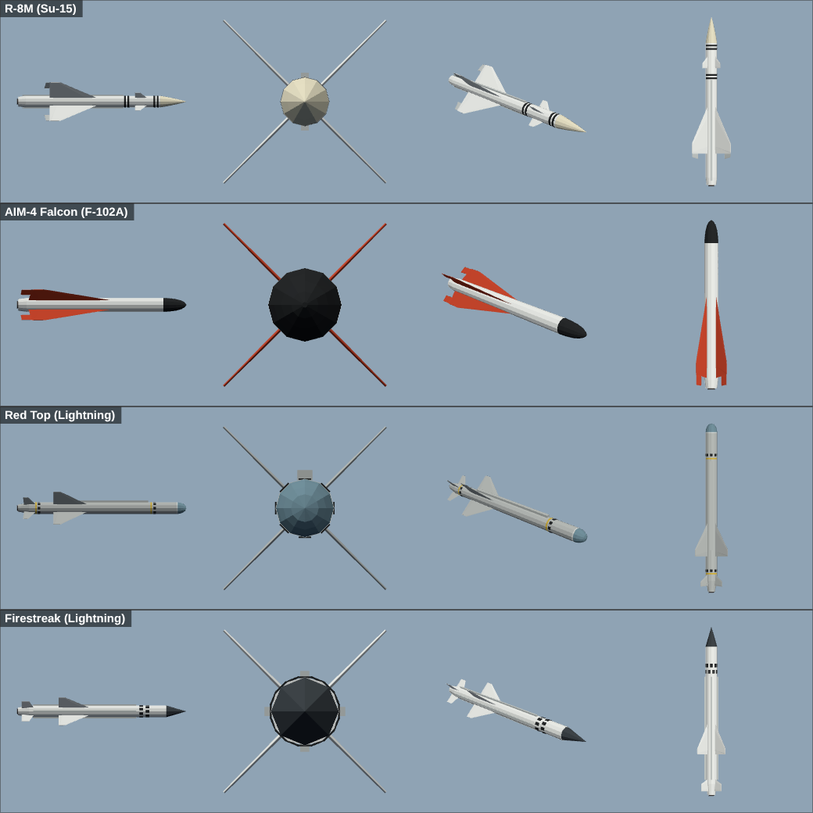
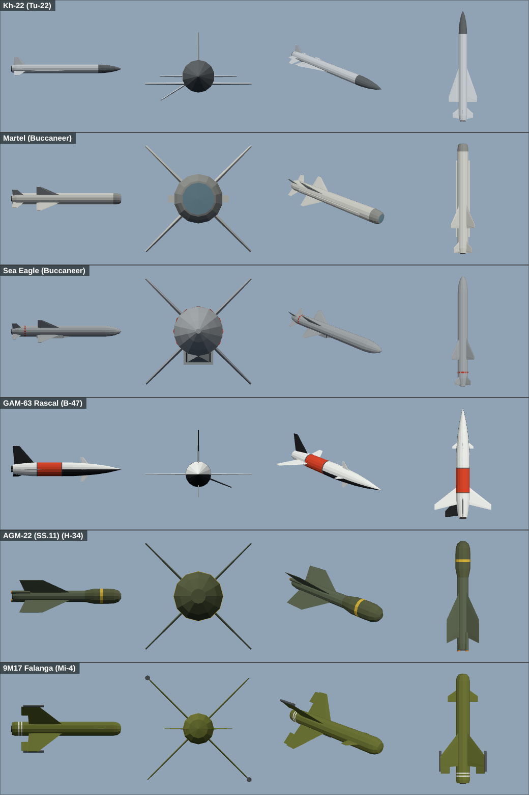
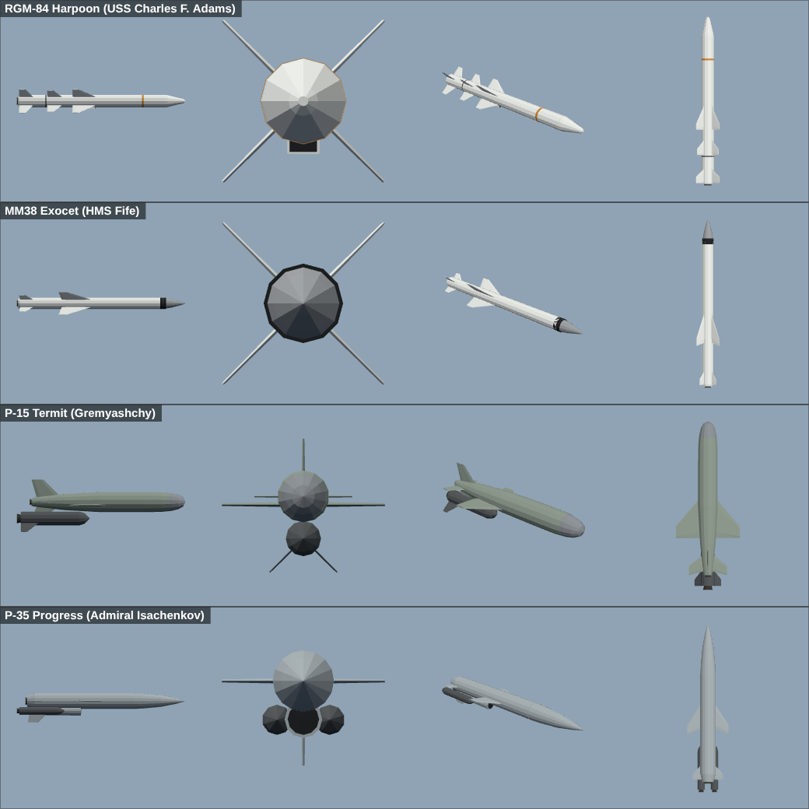
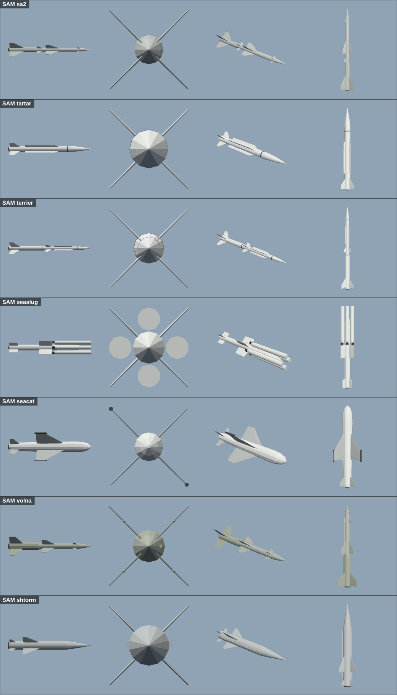
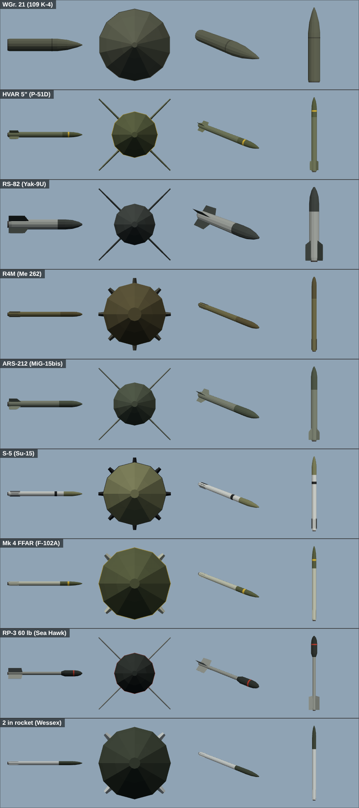
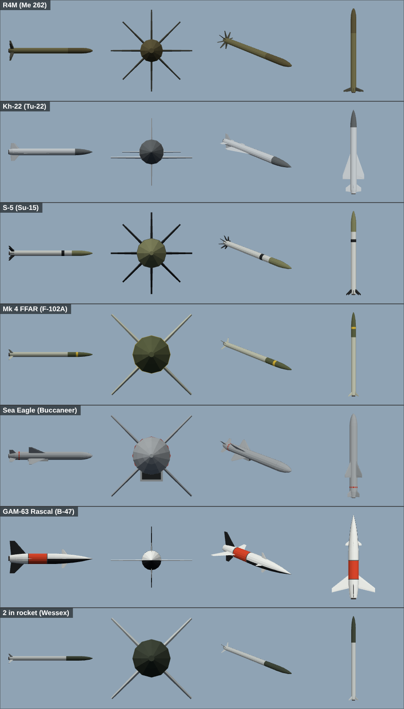

The Federation of Verländ gets the first of the new WWII-era types: four fighters and two bombers, each built from a three-view drawing and checked against period photographs, with its real top speed, armament and loadouts.
P-36A Hawk (early prop): a nimble turn fighter with a .30 and a .50 in the cowl.
F4F-4 Wildcat (carrier fighter): six .50s and two 100 lb bombs, launching from the carrier deck and catapult.
P-47D Thunderbolt "razorback": eight .50s, three 500 lb bombs or six HVAR rockets.
P-38J Lightning: twin booms with counter-rotating props, four .50s and a 20 mm cannon in the nose, bombs or ten HVARs.
B-25J Mitchell: glazed bombardier nose, forward package guns, a top turret, waist and tail guns on the gunner key (R), and a bomb bay whose doors open for the drop.
B-17G Flying Fortress: four engines, twelve 500 lb bombs, and the chin, top, ball, waist and tail guns all manned when you hold R.
Multi-engine aircraft now have a propeller per engine, and each engine adds its own thrust and torque. Gunners cover their own part of the sky: the B-17's chin turret engages targets ahead, the waist guns those abeam and the ball turret those below.
The models

The six airframes as built in Blender.
Checked against the drawings

Each model's outline (red) laid over the drawing it was built from.
In game

With props, landing gear and Verländ markings.
Cockpits

The P-38, B-25 and B-17 are flown with a control wheel. In the B-25 and B-17 you sit in the left seat beside the co-pilot, under a lined cockpit roof.
Every missile, rocket and SAM rebuilt
7 October 2026
Until now most of Skyfront's weapons were the same generic tube with four fins, just scaled up or down, and every ship-launched SAM looked like an SA-2. This update gives all 31 weapons their own model, built to the real weapon's dimensions with its real fin and wing layout, nose and seeker shape, and paint scheme. Each one was checked against period photographs.
Ship SAMs are now themselves: Tartar, Terrier, Sea Slug, Sea Cat, Volna and Shtorm each have their own shape.
Boosters drop away after launch on the SA-2, Terrier, Sea Slug, Volna, Harpoon, P-15 and P-35.
Folding fins sit flat on the pylon and spring out once the weapon is away: the S-5, R4M, FFAR and 2 in rockets, and the ventral fins on the Kh-22 and Rascal.
Each sheet shows the side, front, three-quarter and top views.
Air-to-air

R-98 (Su-15), AIM-4 Falcon (F-102A), Red Top and Firestreak (Lightning).
Air-to-surface

Kh-22 (Tu-22), Martel and Sea Eagle (Buccaneer), GAM-63 Rascal (B-47), SS.11 (H-34) and 9M17 Falanga (Mi-4).
Ship-launched anti-ship missiles

RGM-84 Harpoon, MM38 Exocet, P-15 Termit and P-35, shown with their boosters attached.
Surface-to-air

SA-2, Tartar, Terrier, Sea Slug with its four wrap-around boosters, Sea Cat, Volna and Shtorm.
Unguided rockets

WGr. 21, HVAR, RS-82, R4M, ARS-212, S-5, Mk 4 FFAR, RP-3 and the British 2 in rocket, as carried.
Fins out

In flight: the folding fins spring out and the Kh-22 and Rascal drop their ventral fins.